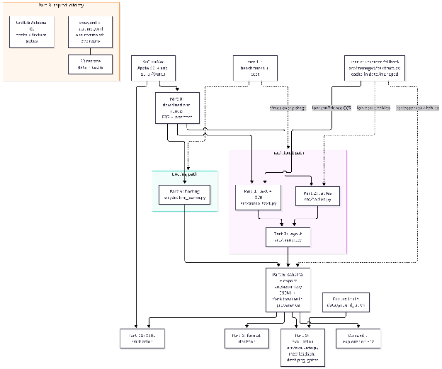
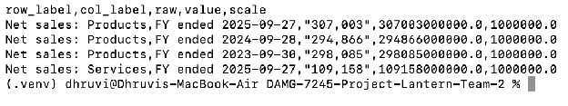
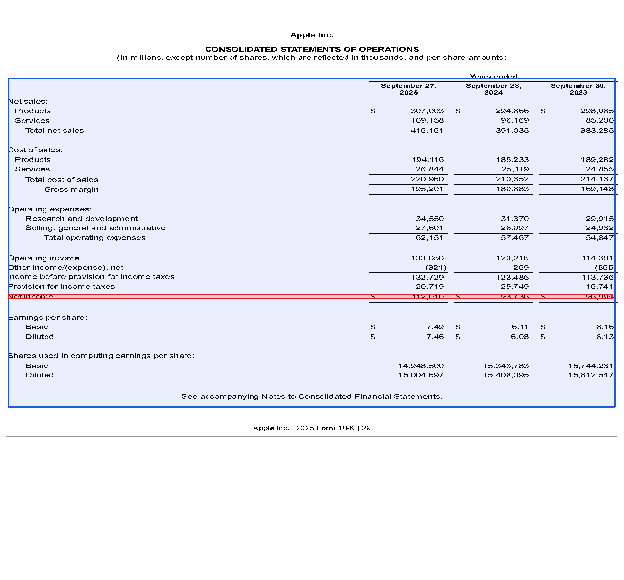
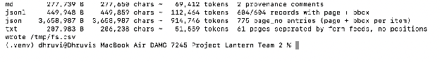
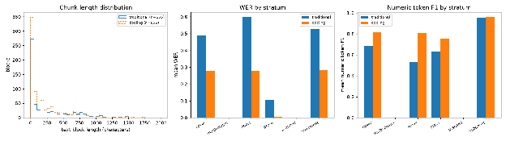
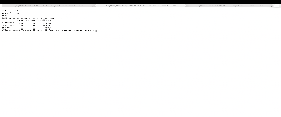
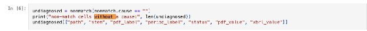

Project LANTERN turns Apple's SEC 10-K and 10-Q filings into a layout-aware, XBRL-validated dataset where every sentence and number traces back to its page and position. The whole pipeline rebuilds from raw filings with one command (dvc repro) and is tested on every pull request. Built by Team 2 (Dhruvi, Lokesh, Guna, Shravya) for DAMG 7245, Fall 2026.
download -> render -> parse_pdfplumber -> tables -> layout -> parse_docling -> export -> xbrl -> evaluate -> bench

Each step of this Codelab covers one Part of the case study, with the command to run it, the key results, and what broke along the way.
https://github.com/BigDataIA-Fall-26-Team-2/DAMG-7245-Project-Lantern-Team-2 |
Goal: Download fixed SEC filings, preserve their source attachments, and render PDFs with a manifest for downstream extraction.
Use Python 3.11 and the pinned requirements. Part 8 describes the verified Ubuntu environment. Run commands from the repository root. params.yaml pins Apple 10-K accession 0000320193-25-000079 and 10-Q accession 0000320193-26-000020. Set a valid SEC contact in download.user_agent_name and download.user_agent_email before downloading.
python src/download.py --params params.yaml --output data/raw
The downloader saves the submission and unpacks its attachments. Keep the original iXBRL HTML, taxonomy files, and images together: rendering and XBRL validation rely on those relative paths. DVC versions the raw artifacts; Git stores the code, configuration, and pointers.
python -m playwright install chromium
python src/render.py --params params.yaml --input data/raw --output data/rendered
Playwright opens the unpacked original HTML and renders Letter-size PDFs. data/rendered/manifest.csv links each PDF stem to filing identity and source metadata. The reproduced corpus has 61 pages for the Apple 10-K and 30 pages for the 10-Q.
tests/fixtures contains scanned.pdf, statement.pdf, and multicolumn.pdf. They exercise image-only OCR, financial tables, and multi-column layout. Reference transcriptions and table data are under tests/fixtures/gt. These committed fixtures allow CI checks without downloading SEC filings.
SEC submissions can include uuencoded binary attachments. Leaving these encoded or rendering an HTML copy outside its unpacked directory broke embedded images. The downloader decodes the attachments and the renderer uses the original HTML path. Rendering fails when an image cannot load instead of silently keeping broken-image placeholders.
The XBRL stage handles the unpacked XML envelope using a temporary unwrapped copy for Arelle; this is a downstream workaround. Changes to rendering can change page-based ground truth, so verify the manifest and page counts and reproduce affected downstream stages through DVC.
Evidence: src/download.py, src/render.py, params.yaml, data/rendered/manifest.csv after reproduction, and docs/ai_log/lokesh.md.
Goal: Extract page text and word coordinates, using OCR when the native PDF text layer is missing or unreliable.
python src/parse_text.py --params params.yaml --input data/rendered --output data/parsed
pdfplumber reads native text and word boxes first. OCR is triggered by either fewer than ocr.min_chars non-whitespace characters or a junk-token fraction above ocr.junk_ratio. The configured values are 20 characters and 0.3, with English Tesseract at 300 DPI. These are independent signals: either can trigger OCR.
Outputs include {stem}_pNNNN.txt page text, {stem}.words.jsonl word records, and ocr_log.csv. Word records retain doc_id, page, text, bbox, ocr, and ocr_conf. Pages are one-based and boxes use a top-left origin in displayed PDF points.
Tesseract boxes begin in raster pixels; conversion uses the actual image dimensions and displayed page frame. Native words have null confidence. OCR confidence uses a 0–100 scale and is not a calibrated probability. The log records OCR triggers, the engine, mean confidence, text length, and managed fallback status.
python src/parse_text.py --params params.yaml --input tests/fixtures --output /tmp/lantern-parsed-fixtures
python -m pytest -q tests/test_parse_text.py tests/test_managed_ocr.py
The scanned fixture forces the OCR path. For a local Tesseract-only comparison, use fixture parameters without the managed section: setting managed.enabled to false prevents paid calls but still permits cached Textract results. The fixture quality tests were updated to preserve this distinction.
After Tesseract, empty output or confidence below managed.trigger.min_ocr_conf checks the shared Textract cache. The configured threshold is 0.75; Tesseract confidence is divided by 100 before comparison. A usable cache hit supplies managed text and word boxes with engine aws-textract.
With managed.enabled: false, a cache miss preserves Tesseract output and records disabled_cache_miss. An empty managed response also preserves local output with an explicit status. Cache or service errors propagate instead of silently appearing successful. Live calls require enabling managed extraction and an authorized AWS identity.
The corrected EC2 text benchmark processed 94 pages with zero errors and one empty page. Mean page time was 0.293 seconds, p95 was 0.531 seconds, and total page-processing time was 27.6 seconds. These are benchmark measurements supplied from EC2, not full-pipeline wall time or proof of transcription accuracy. Accuracy is evaluated separately in reports/metrics.json.
Assuming raster coordinates were already PDF points produced incorrect boxes; conversion now uses actual raster size and the displayed PDF frame. The confidence boundary also required normalizing the Tesseract scale before comparing it with the managed threshold. Review covered cache hits, disabled misses, boundary confidence, empty managed responses, and propagated failures.
Outputs are staged before replacement so a failed extraction preserves previous results, while successful runs remove stale page-text and word files. Multi-column reading-order improvement is a separate stretch task; no measured improvement is claimed here.
Evidence: src/parse_text.py, tests/test_parse_text.py, tests/test_managed_ocr.py, tests/test_fixture_quality.py, docs/CONTRACTS.md, data/bench after dvc pull, and docs/ai_log/lokesh.md.
Goal: In this part we take every financial table in the rendered PDFs and turn it into a clean CSV file, with full numbers and clearly named periods, so later steps can use them without guessing.
Apple's tables don't have any lines drawn between the cells, which turns out to matter a lot. So before choosing a tool, we tried five table methods on four statement pages and checked 40 cells by hand against the page (the results are in reports/tables_method.md). Camelot's lattice mode found nothing at all, since it looks for drawn lines. Camelot's stream mode and pdfplumber's text mode both did well, so we kept those two.
python src/tables.py --input data/rendered --output data/tables
For each page, the script tries both methods, scores what each one found and keeps the better result. It writes down every decision in data/tables/log/tables_log.csv, so you can always see why a method won.
You should end up with 32 tables. On our filings, camelot-stream won 17 of them and pdfplumber-text won 15.

Each row is one cell of the table, with five columns: row_label, col_label, raw, value and scale.
A few things get cleaned along the way. A number in brackets like (2,037) becomes −2,037, and a dash becomes 0. "In millions" is applied, so 112,010 is stored as 112,010,000,000, but per-share amounts are left alone. The col_label says which period the number belongs to, for example "FY ended 2025-09-27". We also keep the number exactly as printed in raw, so you can always check a cleaned value against the page.
What went wrong along the way: at first, old CSVs were left behind when the script ran again, so now it clears them first. One table mixed millions, thousands and plain numbers, so the scale is now set row by row. And when the layout step passed in a box around a table, the "in millions" note and the period headers above it got cut off. Now the script always reads the whole page and only uses the box to pick the table. Later, Guna's evaluation spotted that a closing bracket at the right edge of a table was sometimes cut off, as in "(14,264". That's fixed too (#123), and it turned up in 9 cells in total, with no values changing.
Goal: Identify each page's layout, including titles, paragraphs, lists, tables, and figures. Extract each region using the appropriate tool and organize the blocks in reading order with their sections.
python src/layout.py --params params.yaml --input data/rendered --output data/layout --qa reports/layout --figures data/figures --tables data/tables
LayoutParser's EfficientDet model, trained on PubLayNet, identifies the blocks on each page. Text is extracted using pdfplumber, with Tesseract used when a block has no text. Tables are processed using the Part 2 extractor, while figures are saved as cropped images. Each block is assigned to the section of the nearest heading above it.
A 10-page audit showed that 38% of text blocks, 39% of titles, and 3% of tables were correctly identified. The model was trained on research papers rather than 10-K filings, which explains some of these limitations. Table routing produced tables for 17 of 36 blocks in the 10-K and 12 of 19 in the 10-Q, including both income statements.
Evidence: src/layout.py, reports/layout_audit.md, reports/layout/, prototyping/shravya/, tests/test_layout_absorb.py, docs/ai_log/shravya.md.
Goal: Use Docling, an all-in-one AI document parser, to process the same PDFs as the traditional pipeline. Convert the results into the team's formats and compare both approaches using the same evaluation.
python src/docling_parse.py --params params.yaml --input data/rendered --output data/docling
Docling handles layout detection, reading order, and table extraction using TableFormer in one pass. For each filing, it generates Markdown, lossless JSON, separate Markdown files for each page, {stem}.blocks.jsonl with top-left bounding boxes, and team-format tables in data/docling/tables/. The original HTML version of the 10-K is also converted for comparison.
We compared both approaches against hand-typed ground truth from 16 pages.
Metric | Docling | Traditional |
WER | 0.212 | 0.433 |
Numeric F1 | 0.851 | 0.733 |
Table cell F1 | 1.0 | 1.0 |
These results were measured after the Part 3 table-box fix.
Recommendation: Use Docling as the primary parser, with the traditional pipeline as a fallback and cross-check.
docker run -d --name docling-serve -p 5001:5001 quay.io/docling-project/docling-serve-cpu@sha256:225c8586e20d5d0fc6811a9e0e044fa602bcc4393f00389009bad42d6787b58f
By setting docling.serve_url: "http://localhost:5001", the parse_docling stage sends files to the service over HTTP. The results matched the Docling library exactly, with all 54 team-format tables identical.
Evidence: src/docling_parse.py, reports/docling_comparison.md, reports/eval.md, prototyping/shravya/, tests/test_docling_parse.py, tests/test_docling_serve.py, docs/ai_log/shravya.md.
Goal: Turn every block of the traditional path into one checked record that says exactly where it came from (filing, page, box), and write the JSONL and Markdown that every later step reads.
python src/export.py
The export dont call any parser again. It only reads what the other stages already wrote: layout blocks (Part 3), table CSVs (Part 2), Docling blocks and tables (Part 4) and the render manifest (Part 0). So there is one source of truth per stage. For each filing it writes data/export/{stem}.jsonl (traditional), {stem}.docling.jsonl (Docling) and {stem}.md. Settings are in the export section of params.yaml.
Every record has the same fields, the ones in Appendix B of the brief. This is the net income row of the 10-K income statement, shortened:
{"schema": "lantern/1.0", "doc_id": "0000320193-25-000079", "cik": "0000320193",
"ticker": "AAPL", "form": "10-K", "fiscal_year": 2025, "fiscal_period": "FY",
"page": 32, "section": "Item 8", "block_id": "p0032_b901", "block_type": "Table",
"bbox": [7.0, 105.11, 604.45, 557.61], "units": "pt", "origin": "top-left",
"table": {"raw_cells": [..., ["Net income", "112,010", "93,736", "96,995"]],
"rows": [..., ["Net income", "112010000000.0", ...]]},
"extractor": "camelot-stream", "extractor_version": "camelot-py 2.0.0",
"ocr": false, "ocr_conf": null,
"source_path": "data/rendered/AAPL_10K_20250927.pdf", "sha256": "0f687c47eb31..."}
Where each field comes from:
python -c "import sys;sys.path.insert(0,‘src');from schema import validate_jsonl;ok,err=validate_jsonl(‘data/export/AAPL_10K_20250927.jsonl');print(ok,len(err))"
python -m pytest -q tests/test_export.py
The first line prints the number of good records and 0 errors. src/schema.py is a pydantic model and the export checks every record when it writes it. It refuses a record that has:
Keep in mind the schema checks the form of a record, not if it is right. A record with the wrong page is still valid. Correctness is measured in Part 9.
python scripts/demo_net_income.py
It follows net income for fiscal 2025 through every stage: the us-gaap:NetIncomeLoss element in the iXBRL file (printed 112,010, scale 6), page 32 of the PDF, record p0032_b901, the Markdown line, the Arelle fact and the XBRL status match. It also saves reports/demo_net_income_p32.png, the page with the exact row in red and the record's box in blue.

In the Markdown, each block comes right after an HTML comment with its provenance, so any line can be traced back to its box on the page:
<!– {"doc_id": "0000320193-25-000079", "page": 32, "block_id": "p0032_b901", "bbox": [7.0, 105.11, 604.45, 557.61], ...} -->
What broke and how we fixed it
Evidence: src/schema.py, src/adapters.py, src/export.py, tests/test_export.py, tests/test_exports_bbox.py, tests/test_export_managed.py, reports/export_bbox_fallback.csv, scripts/demo_net_income.py, docs/ai_log/guna.md.
Goal: Here we decide which file format should be the main copy of our data, and which one Case Study 2 should read.
python src/export_txt.py --input data/rendered --output data/export
python src/format_stats.py --output reports/format_stats.csv \
md=data/docling/AAPL_10K_20250927.md jsonl=data/export/AAPL_10K_20250927.docling.jsonl \
json=data/docling/AAPL_10K_20250927.json txt=data/export/AAPL_10K_20250927.txt
The first command writes a plain-text copy of each filing, which we use as the simplest baseline. The second one measures each format of the 10-K: how big it is, roughly how many tokens an AI model would have to read, and whether it keeps track of which page each piece came from.
Format | Approx. tokens | Page information |
TXT | 51,559 | page breaks only |
Markdown | 69,412 | none |
JSONL (Part 5 format) | 112,464 | page and box on all 604 records |
JSON (Docling) | 914,746 | page and box, but far too big for a chat |

Sizes measured on the export used in Step 6.2, before a review added the Docling tables.
I opened a fresh AI chat for each file, attached it, and asked the same three questions: net income for fiscal 2025, total assets, and product and service sales. TXT and Markdown got all three right, but only because the page numbers happened to be printed in the footer or listed in the table of contents. The Docling JSONL got none of them, because at the time its export left out the tables. To its credit, it said "not in the file" instead of making something up. We measured this before Guna's export fix in #111; since then the Docling export includes its 54 tables.We then retested both final JSONL exports on the same three questions: the Docling export (635 records, 31 tables) answered all three correctly, and the traditional one (455 records, 19 tables) confirmed all three supplied answers. Both took the page from each record's own page field (PDF pages 32 and 34), not from a printed footer or contents table.
So we went with JSONL as the main copy, and it's also what Case Study 2 will read, because it's the only format that records the page and position of every single record. The one condition was that it has to include the tables, and both final exports do, which the retest confirmed.
Goal: Answer Lina's question, "why not just use Textract for everything?", with measured numbers, not opinions.
python src/managed/textract.py --params params.yaml --enable
Three pages went to AWS Textract (AnalyzeDocument with Tables and Layout): two clean statement pages, 10-K p32 and 10-Q p6, and page 1 of our scanned fixture. Every answer is saved in data/managed/ under the hash of the page image, so the same page never gets paid twice. Without --enable, and with managed.enabled: false in params.yaml, it only reads the cache and makes no call, so the pipeline runs with no AWS credentials. The 3 pages gave 30 records in our schema and cost $0.045 at list price.
dvc repro -s evaluate
Page | Path | WER | Numeric F1 | Raw cell F1 |
10-K p32 | Traditional | 0.387 | 0.950 | 1.000 |
Docling | 0.208 | 0.950 | 1.000 | |
Textract | 0.048 | 0.977 | 1.000 | |
Google Form Parser | 0.119 | 0.961 | 0.974 | |
10-Q p6 | Traditional | 0.676 | 0.923 | 1.000 |
Docling | 0.254 | 0.968 | 1.000 | |
Textract | 0.042 | 0.970 | 1.000 | |
Google Form Parser | 0.103 | 0.970 | 0.991 | |
Scanned p1 | Tesseract (Part 1) | 0.023 | 0.933 | n/a |
Textract | 0.019 | 0.933 | n/a | |
Google Form Parser | 0.030 | 0.913 | n/a |
Don't read the WER column as "Textract is ten times better". Most of the open-source WER on these pages is page structure (the row label prefixes, and the title and units lines the layout stage still misses), not misreading.
5,000 filings a year, about 100 pages each, so 500,000 pages. Prices from the AWS and Google pricing pages, self-hosted compute from Part 10's EC2 timings.
Option | Per 1,000 pages | Per year |
Self-hosted traditional, compute only | $0.05 | $23 |
Self-hosted Docling, compute only | $0.16 | $81 |
Hybrid: Textract on 5% of pages | $0.75 | $375 |
Textract OCR only | $1.50 | $750 |
Textract with tables, every page | $15.00 | $7,500 |
Google Form Parser, every page | $30.00 | $15,000 |
Textract on every page costs about $7,400 more a year than our own compute. At $100 an hour that is about 75 engineer-hours a year. So buying only wins if keeping our parsers working costs more than that.
python scripts/gcp_compare.py --call
Same 3 pages, the same page images (the cache files even have the same hash names as the Textract ones), scored with the same functions. It is outside the DVC pipeline, so no stage changed. Google was between Docling and Textract on text, but it was the only path below 1.0 on table cells: it read 57,467 as 57.467, and pulled a stray 27 into a table row. That first one is the worst kind of error for a finance company, a valid number a thousand times too small. With twice Textract's price, it changes nothing in the recommendation.
Which region processes and stores the page, how long AWS keeps it, and whether it can be used to train their models. By default AWS may use content to improve the service, so an account-level opt-out policy is needed first. Details in reports/build_vs_buy.md section 7.
Recommendation: dont use Textract for everything. Keep the open-source path as the default and use Textract only as a fallback, for hard scans and pages that fail our quality checks.
What broke and how we fixed it
Evidence: src/managed/textract.py, src/tables.py, src/export.py, data/managed.dvc, scripts/gcp_compare.py, reports/gcp/, reports/build_vs_buy.md, tests/test_managed_fallback.py, tests/test_managed_config.py, tests/test_export_managed.py, docs/ai_log/guna.md.
Goal: Reproduce the pipeline on EC2, version generated artifacts in DVC and S3, and validate the deployed explorer.
We used Ubuntu 24.04.4 LTS, x86_64, approximately 8 GiB RAM, Python 3.11, and CPU-only PyTorch. Install Tesseract with English data, Poppler, Ghostscript, and Chromium. Run commands from the repository root with the virtual environment activated. Install CPU wheels before the remaining requirements to avoid unnecessary CUDA downloads.
source .venv/bin/activate
python -m pip install torch==2.14.1 torchvision==0.29.1 --index-url https://download.pytorch.org/whl/cpu
python -m pip install -r requirements.txt
python -m pip check
python -m playwright install --with-deps chromium
The default remote is lantern-s3 at s3://lantern-team2-dvc-fall-2026/dvc in us-east-1. EC2 uses LanternEC2Role, so no stored access keys are needed. The bucket remains private: another machine needs an authorized AWS identity. The TA accepted a demonstration from our role-backed EC2 instance.
dvc remote list
dvc pull
dvc status -c
The managed Textract cache contains six data files. Its upload transferred seven objects because DVC also stores a directory manifest. This cache is separate from the evaluation ground-truth pages.
set -o pipefail
PYTHONUNBUFFERED=1 dvc repro 2>&1 | tee "$HOME/lantern-final-repro.log"
dvc status
dvc metrics show
python -m pytest -q
dvc push
dvc status -c
The graph contains download, render, parse_pdfplumber, tables, layout, parse_docling, export, xbrl, evaluate, and bench. DVC reruns changed stages according to tracked code, inputs, and parameters. Keep managed.enabled: false for normal reproduction: cached responses remain usable, but new paid Textract calls are disabled.
Results: the ten-stage run completed. After the benchmark device fix, 183 tests passed in 24.46 seconds; DVC reported the pipeline up to date. The final upload pushed 50 additional cache objects and reported the S3 remote in sync. These tests preceded the later fixture-test changes in PR #129. The regenerated lockfile and reports are in PR #130. A fresh-cache pull of the final submission snapshot remains pending; the earlier successful 593-object retrieval covered an older snapshot.
The fixture smoke workflow runs on pull requests with Ubuntu 24.04 and Python 3.11. It installs requirements-ci.txt, extracts fixture text and tables, and runs pytest without EDGAR downloads, DVC remote access, or managed API calls. Fixture CI complements the full-corpus reproduction; it does not prove corpus accuracy.
python src/parse_text.py --params params.yaml --input tests/fixtures --output /tmp/lantern-smoke/parsed
python src/tables.py --params params.yaml --input tests/fixtures --output /tmp/lantern-smoke/tables
python -m pytest -q
Public app: http://184.196.23.157:8501. Streamlit runs as the ubuntu user under the lantern-streamlit systemd service. The working directory is /home/ubuntu/lantern-streamlit; the shared Python environment is /home/ubuntu/DAMG-7245-Project-Lantern-Team-2/.venv. The public app was confirmed working and the health endpoint returned ok.
systemctl is-enabled lantern-streamlit
systemctl is-active lantern-streamlit
curl --fail http://127.0.0.1:8501/_stcore/health
The service survives SSH disconnection and starts when EC2 boots. The app is unavailable while EC2 is stopped overnight. Keep the Elastic IP associated to retain the URL, and disable the idle-stop action during the presentation. The demo uses HTTP on port 8501; it does not expose AWS credentials to visitors.
The pinned Playwright build rejected Ubuntu 26.04, so we rebuilt on Ubuntu 24.04. CUDA downloads exhausted temporary storage; CPU-only wheels and disk-backed temporary space resolved setup. pip check alone did not detect missing boto3, so we also checked application imports. Missing DVC objects were resolved by uploading the managed cache and reproducing the integrated pipeline.
Docling was quiet after loading weights but still used CPU and had available memory; we let it finish. The first benchmark attempted Apple MPS on Linux and failed on all 94 pages. The fix skips unavailable devices, excludes failed timings from cost estimates, and archives prior results. The corrected run records "MPS unavailable on this host"; no GPU performance or cost is claimed.
Evidence: dvc.yaml, dvc.lock, .dvc/config, .github/workflows/smoke.yml, reports/metrics.json, data/bench after dvc pull, and docs/ai_log/lokesh.md.
Goal: Measure how good both paths really are, against text we typed by hand, and add tests that fail if the parsers get worse.
Typed 18 pages from the 150 DPI page images, spread over the strata (prose, statements, notes, cover, and the scanned and multi-column fixtures), plus two statement tables as CSV: the 10-K income statement and the 10-Q balance sheet. The rules were written down first, in data/ground_truth/CONVENTIONS.md. No parser output and no AI tool was used to type them.
dvc repro -s evaluate
dvc metrics show
It writes reports/metrics.json and reports/plots/drift.png. The metrics:
Final run on EC2:
Path | WER | CER | Numeric F1 | Table cell F1 |
Traditional | 0.433 | 0.406 | 0.733 | 1.0 |
Docling | 0.212 | 0.211 | 0.851 | 1.0 |
Stratum | Traditional WER | Docling WER | Traditional numeric F1 | Docling numeric F1 |
Prose (4 pages) | 0.104 | 0.008 | 0.628 | 0.750 |
Cover (2) | 0.489 | 0.278 | 0.685 | 0.813 |
Notes (4) | 0.597 | 0.279 | 0.532 | 0.811 |
Statements (6) | 0.525 | 0.282 | 0.953 | 0.958 |
python -m pytest -q tests/test_quality.py tests/test_fixture_quality.py
python src/evaluate.py --break no-scale
The gates run evaluate.py fresh every time, they never trust a saved file. Thresholds are in params.yaml, set from the measured baseline:
Gate | Threshold | Final run |
Table cell F1, each table | at least 0.90 | 1.0 |
Worst prose WER | at most 0.20 | 0.164 |
Mean prose CER | at most 0.12 | 0.093 |
Mean numeric F1 | at least 0.65 | 0.733 |
To prove they have teeth, --break damages the output on purpose. no-scale drops the "in millions" step: table cell F1 falls from 1.0 to 0.105 and 0.0, and the table gates fail. drop-words deletes every fifth word and the prose gates fail. Both failing runs are saved in reports/teeth_check_failing_run.txt and reports/teeth_check_prose_failing_run.txt, and the dvc metrics diff output is in reports/metrics_diff_no_scale.txt. In CI, the fixture gates score the smoke job's own output (scanned WER 0.023, statement table cell F1 1.0).
reports/plots/drift.png has three panels. The left one is the drift signal: the length of every text block, traditional (655 blocks) against Docling (856). The other two show mean WER and numeric F1 per stratum for both paths, and Docling is better on every one. Multicolumn and scanned have no bars because they are fixtures, scored in the CI fixture gates, not pages of the two filings. metrics.json also keeps the share of pages sent to OCR: 0 of 60 and 0 of 28 exported pages, and 301 characters per text block on average. If rendering or the OCR trigger changes, these move first. Between pipeline versions, dvc metrics diff from the first evaluation to the final one shows text blocks going from 717 to 655 and mean block length from 283.6 to 301.4 (reports/metrics_diff_versions.md), mostly from the Part 3 fix.

What broke and how we fixed it
Evidence: src/evaluate.py, data/ground_truth/, tests/fixtures/gt/, tests/test_quality.py, tests/test_fixture_quality.py, tests/test_evaluate_missing.py, tests/test_evaluate_metrics.py, reports/eval.md, reports/metrics.json, reports/plots/drift.png, reports/teeth_check_failing_run.txt, docs/ai_log/guna.md.
Goal: Measure the speed, memory usage, and failures of each parsing stage, and estimate the cost of running the pipeline compared with a managed service.
python src/bench.py --params params.yaml --input data/rendered --output data/bench
Each stage runs in a separate process across 94 pages, including 61 pages from the 10-K, 30 from the 10-Q, and 3 scanned pages to measure OCR performance. The benchmark measures the same processing steps as the actual pipeline, including output generation.
Results are saved in data/bench/, with a CSV for each stage, along with summary.csv, cost.csv, and machine.json. The benchmark can also be run through the DVC stage bench using dvc repro bench.
We ran the benchmark on an AWS EC2 m7i-flex.large instance running Ubuntu 24.04.4 LTS, with 2 logical CPUs and 7.6 GiB of reported RAM. All stages completed with 0 errors.
Stage | Median s/page | p95 s/page | Mean s/page | Cold start (s) | Peak memory (MiB) |
Text (pdfplumber + OCR) | 0.113 | 0.531 | 0.293 | 0.27 | 633 |
Tables | 0.542 | 0.994 | 0.540 | 0.64 | 235 |
Layout | 0.741 | 2.268 | 1.021 | 3.45 | 1,617 |
Docling (CPU) | 4.780 | 16.480 | 6.503 | 3.88 | 1,598 |
Cold start is the one-time setup before the first page (loading the library or AI model), timed separately; the per-page times are warm, measured after setup. For the model stages, cold start is 3.45 s for layout and 3.88 s for Docling, small next to their total page time (96 s and 611 s), so keeping workers warm matters for latency more than for batch cost.
The traditional pipeline took 1.854 seconds per page, while Docling took 6.503 seconds per page. Docling accounted for most of the processing time, taking 611 seconds out of the total 786 seconds.
We estimated the annual cost of processing 500,000 pages using 4 workers and a CPU VM at the configured hourly price. The figures come from the benchmark's cost.csv.
Option | Cost per year |
Traditional path, CPU VM | ~$23 |
Docling, CPU VM | ~$81 |
Textract, OCR only | $750 |
Textract, with tables | $7,500 |
These figures are estimates rather than actual billing costs. The performance of 4 workers running in parallel has not been measured, and the VM type used for the cost estimate was not benchmarked.
Recommendation: Based on the current measurements, we recommend running the pipeline on CPU. The results do not establish whether using a GPU would improve performance. Since the estimated compute costs are low, the choice between local processing and a managed service should depend mainly on extraction quality and maintenance effort (see reports/build_vs_buy.md). Downloading is limited by EDGAR's 10 requests per second, roughly 17–25 minutes for 5,000 filings (estimated), so parsing, not downloading, is the bottleneck.
Evidence: src/bench.py, reports/benchmarks.md, reports/ec2_benchmark_observed.csv, tests/test_bench.py, docs/ai_log/shravya.md, docs/ai_log/lokesh.md.
Goal: In this last part we check every number on the statement pages against the official values Apple tags inside the filing itself (XBRL).
python src/xbrl.py --input data/rendered/manifest.csv --output data/xbrl
This uses a tool called Arelle to read the XBRL tags in each filing. You should get 1,553 numeric facts in data/xbrl/facts.csv. A quick check: net income for fiscal 2025 should be 112,010,000,000 USD.
This step needed a few fixes before it worked. The SEC wraps each file in an extra layer, so Arelle found nothing until we unwrapped a temporary copy. The dates also came out one day late, and when a fact appeared twice we were keeping the rounded copy instead of the exact one.
python src/xbrl.py compare --path traditional --tables data/tables
python src/xbrl.py compare --path docling --tables data/docling/tables
The PDF says things like "Gross margin", while XBRL uses names like GrossProfit, so each row label has to be matched to the right XBRL name. We try our own list first (config/label_map.yaml), then Apple's own label file, and finally a fuzzy match, whose cut-off is set in params.yaml. How close two numbers need to be depends on how precisely Apple reported them: for numbers in millions, a difference of up to 500,000 still counts as a match. Every cell ends up with one status: match, sign, scale, mismatch, pdf_missing or xbrl_missing.
Path | Income | Balance | Cash flow | All |
Traditional | 133/133 | 110/110 | 85/145 | 328/388 (84.5%) |
Docling | 133/133 | 110/110 | 82/145 | 325/388 (83.8%) |


On the first run, "Intangible assets, net" on the 10-Q balance sheet didn't match: the PDF said 20,342 million and XBRL said 25,417 million. Searching the facts for 20,342 showed what was going on. We had matched the label to the total, but the balance sheet only shows the non-current part, and Apple reports that under its own custom name, aapl:IntangibleAssetsNetExcludingGoodwillNoncurrent, not a standard one. Once the label list could handle Apple's own names, it matched, and a test now keeps it that way.
The lesson for us was that checking whether a name exists can't catch a wrong match. You only see it when you compare the actual values.
The full report is in reports/xbrl.md, and the executed notebook is notebooks/xbrl_validation.ipynb.